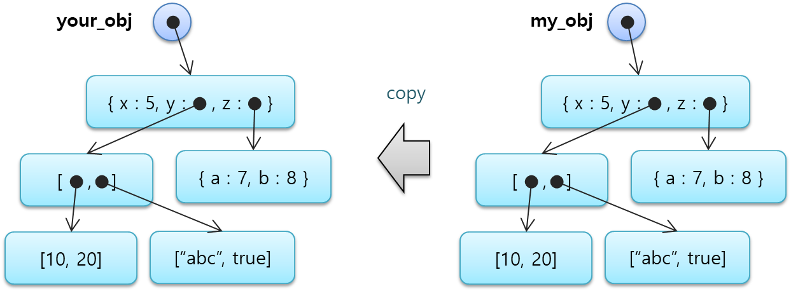
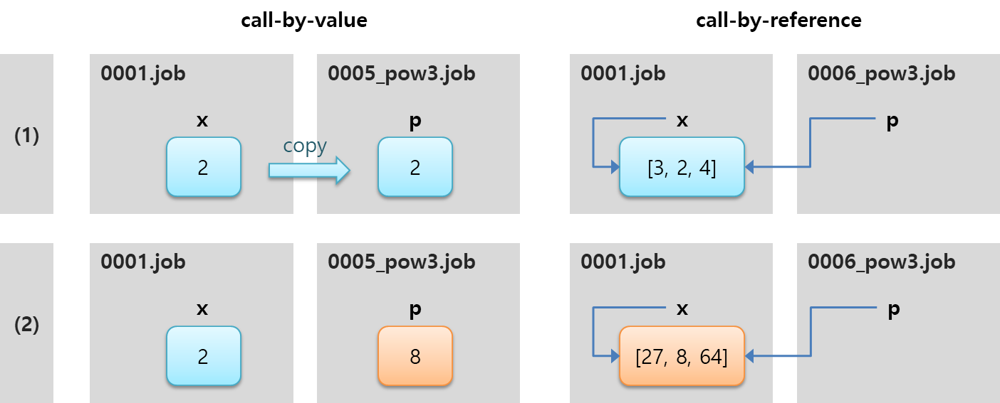
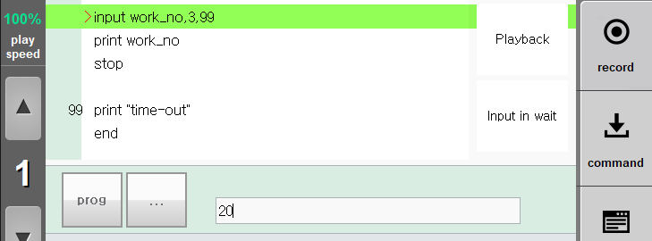

Hi6 제어기
HRScript 기능설명서
Hi6 제어기
HRScript 기능설명서
현대로보틱스
목차
1. 개요
1.1. HRScript의 소개
현대로봇 hi6 제어기는 HRScript라는 이름의 로봇언어로 로봇이 할 일을 프로그램할 수 있습니다. 작성된 프로그램은 확장자 .job 을 가진 여러 개의 파일에 나뉘어 저장될 수 있습니다.
HRScript는 이름에서 알 수 있듯이 스크립트 언어로서, 컴파일 절차없이 인터프리터에 의해 한 행씩 해석, 실행됩니다. python이나 javascript 언어와 유사하지만 문법은 더 간단합니다.
2. 기본 문법
먼저, hrscript의 기본 용어들을 설명합니다. 변수를 정의하는 방법, 그리고 연산자를 사용해 간단한 수식을 구성하고 그
결과값을 변수에 대입하는 방법을 따라가면서, job 프로그램의 기본적인 개념을 이해해 보도록 하겠습니다.
2.1. 명령문
명령문(statement)이란 JOB 프로그램의 실행 단위가 되는 각각의 명령 문자열을 말합니다.
hrscript는 한 행에 1개의 명령문만을 허용합니다. 아래에 4개의 명령문의 예를 보였습니다. 내용을 이해할 필요는 없습니다.
대략적인 형태만 눈여겨보세요.
move P,po3,spd=80%,accu=1,tool=3 until do33
10 z_pos = (base_height+offset)*1.05
# robot has to wait sensor2 input
*err_handle
로봇을 이동시키는 스텝 명령문(move문 등) 이외의 명령문에 대해서는 선택적으로 행의 선두에 행 번호(1~9999)를 붙일 수
있습니다. 두 번째 행에 있는 10이 행번호의 예입니다.
명령문의 앞과 뒤에는 임의 개수의 공백이나 tab이 있어도 상관없습니다.
가독성을 위해 명령문의 적절한 들여쓰기(indentation)가 권장됩니다. 들여쓰기는 공백과 tab이 모두 허용되며 실행 시 동작에
영향을 주지 않습니다.
2.2. 식별자
앞으로 설명될 명령어, 변수, 함수, 레이블은 모두 이름을 가지고 있습니다. 이 이름들을 식별자(identifier)라고 통칭합니다.
식별자를 정할 때는 다음과 같은 hrscript의 식별자 규칙을 따라야만 합니다.
- 영문 대소문자과 숫자, 밑줄(underscore)로만 구성됩니다.
- 첫 글자로는 숫자가 허용되지 않습니다. 반드시 대소문자, 혹은 밑줄이어야 합니다.
- 공백이나 tab을 포함할 수 없습니다.
- if, for 등 시스템에서 이미 정의한 식별자는 사용할 수 없습니다.
- 길이는 제약이 없습니다.
다음은 식별자의 올바른 예와 잘못된 예입니다.
myvar (O)
myvar2 (O)
_myvar (O)
MyVar (0)
310a (X) ; 숫자로 시작.
move (X) ; 시스템에 이미 정의된 식별자
v300$ ; 밑줄 이외의 기호($) 사용
my var (X) ; 공백 포함
2.3. 명령문의 종류
hrscript의 명령문에는 아래와 같이 4종류가 있습니다.
- 프로시져 (procedure)
- 대입문 (assignment)
- 주석문 (comment)
- 레이블 (label)
2.3.1. 프로시져
프로시져는 명령어와 0~N개의 매개변수(parameter)들로 구성됩니다.
move P,po3,spd=80%,accu=1,tool=3 until do33
프로시져 매개변수는 아래와 같이 3가지 종류가 있습니다.
| 종류 |
문법 |
예제 |
| 위치(position) 매개변수 |
<value> |
P, po3 |
| 키워드(keyword) 매개변수 |
<keyword> = <value> |
spd=80%, accu=1, tool=3 |
| 전치사(preposition) 매개변수 |
<preposition> <value> |
until do33 |
위치매개변수는 몇 번째에 위치하는지에 따라 그 역할이 결정되므로, 위치가 바뀌어서는 안 되며,프로시져의 가장 앞 부분에 있어야
합니다. 키워드 매개변수는 위치매개변수 다음에 있어야 하지만, 키워드 매개변수들 간의 순서는 동작에 영향을 주지 않습니다.
전치사 매개변수는 맨 마지막에 배치됩니다.
2.3.2. 대입문
대입문은 좌변과 대입 연산자(=), 우변으로 구성됩니다. 좌변(lvalue)는 반드시 값을 저장할 수 있는 변수여야 합니다.
상수나 수식은 허용되지 않습니다.
우변(rvalue)은 상수, 변수, 수식이 모두 허용됩니다.
height=(500+margin)/2
2.3.3. 주석문
job 프로그램의 내용을 이해하기 쉽도록 설명하는데 사용합니다. 주석문은 실행 되더라도 아무 동작도 수행되지 않습니다. 아래와 같이 해시
기호(#) 뒤에 설명을 붙이는 형식입니다. 하나의 명령문으로서 사용할 수도 있고 다른 명령문 뒤에 붙일 수도 있습니다.
# robot has to wait sensor2 input
var work_w,work_h # 작업물의 너비와 높이
2.3.4. 레이블
goto 문에 의해 이동할 목표 지점을 표시합니다. 별표(*)와 식별자로 구성됩니다.
2.4. 첫 번째 프로그램 - Hello, World !
티치펜던트 화면에 문자열을 출력하는 간단한 job 프로그램을 작성해봅시다. 새로운 job을 생성한 후, 아래와 같이 print문을
기록하고, "Hello, World !"라는 문자열 파라미터를 붙입시다.
print "Hello, World !"
print명령문은 티치펜던트의 job panel 하단에 값을 출력할 때 사용합니다. 이제 프로그램을 실행하면 job panel 하단에
Hello, World라는 문자열이 출력되는 것을 볼 수 있습니다.
2.5 자료형 (type)
2.5.1. 문자열 자료형
앞 절의 첫 프로그램에서 print 문의 파라미터로서 "Hello, World" 라는 데이터를 사용했는데 이것은 문자열 자료형입니다.
문자열 자료형의 값은 큰 따옴표로 시작하고 끝납니다. 문자열 길이의 제한은 없습니다.
print "Welcome to the Robot World."
문자열 내의 따옴표 혹은 특수 문자를 표현하기 위해 역슬래시(\)로 시작하는 시퀀스가 사용됩니다. 이러한 시퀀스를
이스케이프(escape) 문자라고 합니다.
지원되는 이스케이프 문자는 아래 표와 같습니다.
| " |
큰 따옴표 (double quote) |
| \\ |
역 슬래시 (backslash) |
| \t |
탭 (tab) |
| \n |
탭 (tab) |
print "Message:\nPlease, press \"OK\"button."
출력결과
Message:
Please, press "OK" button.
2.5.2. 숫자 자료형
숫자 자료형은 정수나 실수를 보관합니다.숫자 자료형도 있습니다. print 문으로 출력해봅시다. 아래 예와 같이 print 문에 여러
개의 값을 쉼표(,)로 구분하여 나열하면, 각각의 값이 공백으로 구분되어 출력됩니다.
280
3.141592
-99
print 280, -99
시스템 내부적으로는 정수와 실수를 따로 구분해서 처리합니다. 각각의 데이터 크기는 아래와 같습니다.
| 데이터 형 |
데이터 크기 (바이트) |
| 정수 (integer) |
4 |
| 실수 (real) |
8 |
2.5.3. bool 자료형
아래와 같은 논리, 비교연산의 결과로서 true(참)와 false(거짓)의 2가지 값만을 갖습니다.
var x=true
print false and x
print 10 > 5
print 10 <= 5
출력결과
false
true
false
2.5.4. 배열과 객체형
이외에도 배열(array)과 객체(object)형이 있습니다. 이 후, 4.1절과 4.2절에서 자세히 알아보겠습니다.
2.6. 변수
변수(variable)란 값을 저장하는 공간이며, 식별자 이름을 가지고 있습니다. 변수는 전역변수(global variable)와
지역변수(local variable)로 나뉘는데 그 차이는 뒤에서 설명하겠습니다. 일단 여기서는 지역변수로 예를 들어 설명합니다.
변수는 아래와 같이 var 명령어로 만들 수 있으며 이를 변수를 정의(define)한다고 합니다. var 명령어 뒤에 여러 개의
식별자를 열거하여, 한꺼번에 만들 수도 있습니다.
var myvar
var width, height, depth
변수에 값을 저장하는 것을 대입(assign)한다고 합니다. 대입은 변수를 정의하면서 할 수도 있고, 정의한 후에 할 수도 있습니다.
정의할 때 대입을 같이 하지 않으면 기본적으로 숫자 값 0을 갖게 됩니다.
var myvar=0 var message, width=200 message="Invalid input value"
대입을 할 때 대입연산자(=)를 사용했습니다. HRScript에서 = 는 같다는 뜻이 아니라, 연산자 우변의 값을 좌변의 변수에
대입한다는 의미입니다. 이제 변수에 저장된 값을 print 문으로 출력해 봅시다.
var myvar=0
var message, width=200
message="Invalid input value"
print width, message
이미 값이 대입된 변수에 다른 값을 대입할 수도 있습니다. 갖고 있는 값이 변할 수 있기 때문에 변수(variable)이라고 부르는
것입니다.
var width=200
width=300
2.7. 2진수와 16진수
앞에서 예를 든 숫자형 값들은 모두 10진수로 해석됩니다. 2진수나 16진수 값도 표현할 수 있는데 아래와 같이 각각 0b와
0x접두어를 붙여주면 됩니다.
var binary = 0b10010011
var hexadecimal = 0xFF4A38C0
2.8. 연산자와 수식
아래의 예를 보면 숫자 값 500에 변수 margin을 더한 후 2로 나누어 height라는 변수에 대입하고 있습니다.
var height, margin=10
height=(500+margin)/2
print height
height에는 수식의 결과 값인 255가 대입된 것을 print문으로 확인할 수 있습니다.
이와 같이 값이나 변수인 피연산자(operand)들을 다양한 연산자(operator)로 연결하여 수식(expression)을 작성할 수
있고 그 결과를 변수에 대입하거나, 명령문의 파라미터로 사용할 수 있습니다.
아래와 같이 덧셈과 곱셈을 괄호없이 쓰면 어떤 연산이 먼저 수행될까요? 덧셈, 뺄셈보다 곱셈, 나눗셈을 먼저 한다는 걸 알고 있지요?
이처럼 연산자들 사이에는 수행되는 순서가 있으며 이를 연산자 우선순위(operator precedence)라고 합니다. 곱셈의 우선순위가
덧셈보다 높기 때문에 뒤에 있지만 먼저 수행되는 것입니다.
print 10+10*2
문자열에 대해서도 + 연산자를 사용하면 문자열들이 연결(concatenate)됩니다.
var name="axis1", type="rotational"
print name + ":" + type
HRScript가 지원하는 연산자는 아래와 같습니다. 위에 있을수록 연산자 우선순위가 높습니다. (즉, 먼저 수행됩니다.)
|
연산자
|
의미
|
예
|
|
( )
|
괄호 (grouping)
|
(10+10)*2 ; 40
|
|
[ ]
|
배열 요소 접근
|
arr[3]
|
|
**
|
승 (exponentiation)
|
10**3 ; 1000
|
|
+x, -x
|
부호 (sign)
|
-300
|
|
*, /, mod
|
곱셈, 나눗셈, 나머지
|
300/3 ; 100, 8 mod 3 ; 2
|
|
+, -
|
덧셈, 뺄셈
|
300-100 ; 200
|
|
~
|
bitwise NOT
|
~0b11010010
; 0b11111111111111111111111100101101
|
|
&
^
|
<<
>>
|
bitwise AND
bitwise XOR
bitwise OR
shift left
shift right (부호유지)
|
0b11010010 & 0b11110000 ; 0xd0
0b11010010 ^ 0b11110000 ; 0x22
0b11010010 | 0b11110000 ; 0xf2
0b11010010 << 2 ; 0b1101001000
0b11010010 >> 2 ; 0b00110100
|
|
<, <=, >, >=,
!=, ==
|
비교연산
!=는 다르다.
==는 같다.
|
30 <= 29 ; false
response != "ok"
|
|
not x
|
논리연산 NOT
|
not error_state
|
|
and
or
|
논리연산 AND
논리연산 OR
|
height>100 and invert==false
timeout or work_count>3
|
피연산자가 수치나 bool값일 경우, 비교연산과 논리연산의 결과는 bool자료형이며, 나머지 연산의 결과 형은 숫자 자료형입니다.
bool형의 피연산자를 비교연산자 없이 그대로 쓰면, 그 값이 true와 같은지를 뜻합니다. 예를 들어 아래의 두 행은 의미가 같습니다.
var result= timeout
var result= (timeout==true)
문자열에 대해 사용할 수 있는 연산자는 덧셈(+)과 비교연산(!=, ==), 대입연산(=)입니다. 문자열 덧셈은 피연산자 문자열들을
연결(concatenate)하며, 앞서 예를 보인 바 있습니다.
비교연산은 문자열이 다른지 같은지를 판단합니다.
var response="ok"
print response=="ok"
print response=="ng"
간혹, 연산과정에서 피연산자의 자료형이 자동으로 바뀌는 경우도 있습니다.
논리연산자의 피연산자로 수치를 사용할 경우, 수치가 0이면 false, 0이 아니면 true로 간주합니다.
var count_a=1, count_b=0, height=100
print count_a and height>99
print count_b and height>99
bitwise NOT과 shift left/right는 32bit 길이를 기반으로 계산합니다.
2.9. 함수
각도 60 를 radian값으로 변환하려면 어떻게 해야 할까요? 혹은, 변수 mystr이 담고 있는 문자열의 길이를 알아내려면
어떻게 해야 할까요?
HRScript는 매개변수로 입력을 받아 어떤 처리를 한 후 결과값을 리턴해주는 여러가지 함수(function)를 제공합니다.
함수는 아래와 같이 수식의 일부로서 사용할 수 있습니다.
var dg=60, rd
rd=deg2rad(dg)
var limit=40, message="Input your code number"
var validity= len(message) < limit
HRScript에서 제공되는 함수의 목록은 아래와 같습니다. (각 표는 이름 정렬순입니다.)
2.9.1. 수학 함수
|
함수
|
설명
|
사용 예
|
결과
|
|
abs(a)
|
a의 절대값 (absolute) 을 리턴합니다.
|
abs(-300)
|
300
|
|
acos(a)
|
a의 arc cosine값을 radian 형식으로 리턴합니다.
|
acos(0.5)
|
1.0472
|
|
asin(a)
|
a의 arc sige 값을 radian 형식으로 리턴합니다.
|
asin(0.5)
|
0.5236
|
|
atan(a)
|
a의 arctangent 값을 radian 형식으로 리턴합니다.
|
atan(0.5)
|
0.4636
|
|
atan2(a, b)
|
y길이가 a, x길이가 b인 삼각형의 arctangent 값을 radian 형식으로 리턴합니다.
|
atan2(2,1)
|
1.1071
|
|
cos(r)
|
radian 형식의 a의 cosine 값을 리턴합니다.
|
cos(3.1415)
|
-1
|
|
deg2rad(d)
|
degree 형식의 d의 radian 값을 리턴합니다.
|
deg2rad(-90)
|
-1.570796
|
|
dist(x, y)
|
원점에서 (x, y) 좌표까지 의 유클리드 거리를 리턴합니다.
|
dist(3.5,10)
|
10.59481
|
|
max(a, b)
|
a와 b중 큰 값을 리턴합니다.
|
max(-1.23, -3)
|
-1.23
|
|
min(a, b)
|
a와 b중 작은 값을 리턴합니다.
|
max(-1.23, -3)
|
-3
|
|
near(a, b[,e])
|
실수값 a와 b의 차이가 e보다 작거나 같으면 1, 크면 0을 리턴합니다.
|
near(0.005, 0.0058)
near(0.005, 0.006)
near(0.005, 0.006, 0.1)
|
1
0
1
|
|
rad2deg(r)
|
radian 형식의 r의 degree값을 리턴합니다.
|
rad2deg(1.570796)
|
90
|
|
sin(r)
|
radian 형식의 r의 sine 값을 리턴합니다.
|
sin(1.5*3.1415)
|
-1
|
|
sqr(a)
|
a의 제곱근(square root)을 리턴합니다.
|
sqr(16)
sqr(0)
|
4
0
|
|
tan(r)
|
radian 형식의 r의 tangent 값을 리턴합니다.
|
tan(3.141592/4)
|
0.9999
|
2.9.2. 문자열 함수
var str="hello, world"가 실행된 상태에서의 예
|
함수
|
설명
|
사용 예
|
결과
|
|
bin(a)
|
수치 a의 2진 표현 문자열을 리턴합니다.
|
bin(0b0010)
|
"10"
|
|
chr(a)
|
ASCII코드 a인 문자를 문자열형으로 리턴합니다.
|
chr(65)
|
"A"
|
|
double(s)
|
실수 문자열s의 실수형값을 리턴합니다.
(해석되는 위치까지만 해석하고 나머지는 버림)
|
double("29.38E-2")
|
0.2938
|
|
hex(a)
|
수치 a의 16진 표현 문자열을 리턴 합니다.
|
hex(0x7A2F)
|
"7A2F"
|
|
int(s)
|
정수 문자열s의 정수형값을 리턴합니다.
(해석되는 위치까지만 해석하고 나머지는 버림)
|
int("13.25")
int("29.38E-2")
|
13
29
|
|
left(s, n)
|
문자열 s의 앞 부분 n개의 문자로 된 문자열을 리턴합니다.
|
left(str, 3)
|
"hel"
|
|
len(s)
|
s가 문 자열이면 문 자열의 길 이를 리 턴합니다.
s가 배 열이면 배 열의 요 소 개 수를 리 턴합니다.
|
len("HELLO")
len([20, 30, 80])
|
5
3
|
|
mid(s, i, n)
|
문자열 s의 i번 째 문자부터 n개의 문자로 된 문자열을 리턴합니다. (첫 문자 위치는 0.)
|
mid(str, 3, 5)
|
"lo, w"
|
|
mirror(s)
|
문자열 s를 역전한 문자열을 리턴합니다.
|
mirror("HELLO")
|
"OLLEH"
|
|
right(s, n)
|
문자열 s의 뒷부분 n개의 문자로 된 문자열을 리턴합니다.
|
right(str, 3)
|
"rld"
|
|
str(a)
|
수치 a의 10진 표현 문자열을 리턴합니다.
|
str(13.25)
|
13.250000
|
|
strops(s, p)
|
s문자열 내에 p문 자열과 일치하는 최초의 위치를 리턴합니다.(첫 문자 위치는 0. 없으면 -1.)
|
strpos(str, "llo")
strpos(str, "hi")
|
2
-1
|
2.9.3. 날짜, 시간 함수
|
함수
|
설명
|
사용 예
|
결과
|
|
date( )
|
현재의 날짜를 문자열 형으로 리턴합니다.
(YYYY-MM-DD형식)
|
date( )
|
"2019-04-17"
|
|
time( )
|
현재의 시간을 문자열 형으로 리턴합니다.
(HH:MM:SS형식)
|
time( )
|
"08:48:14"
|
|
timer( )
|
전원투입 시로부터 경과한 시간을 초(sec) 단위로 리턴합니다.
|
timer( )
|
2796.37
|
2.9.4. 생성자 함수
매개변수를 입력받아 새로운 객체를 생성하여 리턴해주는 함수입니다.
|
함수
|
설명
|
사용 예
|
결과
|
|
Array(n)
Array(a, b, c)
|
요소 n개의 배열을 생성해 리턴합니다. 요소의 초기값은 0입 니다.
인수를 2개 이상 지정하면 다차원 배열이 생성됩니다.
4.1절을 참조하십시오.
|
Array(900)
Array(3,4)
|
배열[900]
배열[3][4]
|
|
Pose(요소)
|
포즈 객체를 생성해 리턴합니다.
5.1절 을 참 조하십시오.
|
|
포즈 객체
|
|
Shift(요소)
|
시프트 객체를 생성해 리턴합니다.
5.2절을 참조하십시오.
|
|
시프트 객체
|
2.9.5. 기타 함수
|
함수
|
설명
|
사용 예
|
결과
|
|
cpo(crd, mode)
|
로봇이 취하고 있는 현재 자세(current pose)를 crd좌표계로 리턴합니다.
crd 인수로 사용할 수 있는 값는 5.1절의 표를 참조하십시오.
mode가 "cmd"이면 지령값, "cur"이면 현재값입니다.
crd, mode 파라미터를 생략 가능하며 디폴트값은 각각 “base”, ”cur” 입니다.
|
cpo("joint", "cmd")
|
로봇의 지령값을 축좌표계로 보관하는 포즈*
|
mkucs(n,po)
mkucs(n,po1,po2
,po3)
|
n번 사용자좌표계 객체를 생성하여 등록합니다.
5.5절 을 참 조하십시오.
|
|
0 : OK
<0 : 에러코드
|
|
result()
|
일부 프로시져는 수행 결과를 확인해야 할 경우가 있습니다. 프로시져 수행 직후 result( ) 함수를 호출하면, 수행 결과를 리턴 받을 수 있습니다.
|
result()
|
|
* 포즈(pose)는 로봇의 자세 혹은 툴 끝의 위치를 나타내는 데이터형입니다. 이후의 5.1절에서 자세히 설명합니다.
3. 제어문과 서브프로그램
.job 프로그램의 명령문들은 위에서 아래로의 순서로 한 행씩 수행됩니다. 하지만, 어떤 조건에 따라 명령문들을 수행하지 않고
건너뛰거나, 특정한 명령문들을 여러 번 반복해서 수행할 수도 있습니다. 이렇게 프로그램의 흐름을 제어할 수 있는 제어문에 대해서
알아봅시다.
3.1. 주소 (Address)
순서대로 다음 행을 수행하지 않고 프로그램의 다른 위치로 이동하는 것을 분기(branch)라고 합니다. 주소란 분기의
목적지(destination) 입니다.
주소를 정의하는 방법은 행번호와 레이블의 2가지입니다. 아래의 예에서 두 번째 명령문의10은 행번호이고, 마지막 명령문
*err_handle은 레이블입니다.
move P,po3,spd=80%,accu=1,tool=3 until do33
10 z_pos = (base_height+offset)*1.05
# robot has to wait sensor2 input
*err_handle
3.2. 정지, 대기문
프로그램의 실행을 정지시키거나, 일정 시간동안, 혹은 조건이 만족할 때까지 대기시킬 수 있습니다.
3.2.1. stop문
| 설명 |
프로그램을 정지시킵니다. 재기동하면 다음 행부터 계속 수행합니다. |
| 문법 |
stop |
| 사용 예 |
if di9
stop
endif |
3.2.2. end문
| 설명 |
프로그램을 정지시킵니다. 연속 재생모드이거나 재기동하면 주 프로그램의 처음부터 다시 수행합니다. |
| 문법 |
end |
| 사용 예 |
move p,spd=70%,accu=1,tool=0
move p,spd=70%,accu=1,tool=0
end |
3.2.3. delay문
설명 지정한 시간 동안 대기한 후 다음 명령문으로 진행합니다.
문법 delay <시간>
파라미터 시간 대기할 시간 산술식
0.1~60.0 sec
사용 예 delay 3.5
3.2.4. wait문
설명 지정한 조건이 참이 될 때까지 대기한 후 다음 명령문으로 진행합니다.
문법 wait <조건>[,<제한시간>,<timeout 주소>]
파라미터 조건 대기할 조건 조건식
제한시간 조건이 거짓일 경우 대기할 최대 제한 시간
(timeout) 산술식
0.1~60.0 sec
timeout 주소 제한시간 초과 시, 분기할
주소 주소
사용 예 wait sensor_ok
wait (sensor_ok and pos_ok),10,*timeout
3.3. 분기문
조건없이 다른 주소로 분기합니다.
3.3.1. goto문
설명 지정한 주소로 분기합니다.
문법 goto <주소>
파라미터 주소 분기할 주소
행 번호인 경우 산술식도 가능
사용 예 goto 99
goto addr
goto *err_hdl
3.4. 조건문
조건에 따라 특정한 동작을 수행하거나 수행하지 않을 수 있습니다.
3.4.1. 단문 if문
단문 if문의 형태는 다음과 같습니다. <bool 표현식>이 true이면 <주소>로 분기하고, false이면
분기하지 않고 다음 명령문으로 넘어갑니다.
if <bool 표현식> then <주소>
아래는 단문 if의 사용 예입니다. pressure 가 limit보다 크다는 조건이 true인 경우, 레이블 주소인 *err로 분기해서
압력이 너무 높다는 경고를 print합니다. false이면, 분기하지 않고 다음 명령문을 차례로 수행하기 때문에, ' 정상 동작 중.'을
출력하고 프로그램을 끝냅니다.
var pressure=95, limit=90
if pressure > limit then *err
print "정상 동작 중."
end
*err
print "경고: 압력이 너무 높습니다."
3.4.2. 복문 if~endif문
단문 if는 참일 경우 특정 주소로 분기하는 동작 밖에는 못합니다. 그 외의 동작, 혹은 여러 개의 명령문을 수행해야 한다면 복문
if문을 사용해야 합니다.
형태는 다음과 같습니다. <bool 표현식>이 true이면 if ~ endif 사이의 <명령문>들을 순서대로
수행합니다. false이면 <명령문>들을 수행하지 않고 endif 다음 위치로 건너뜁니다.
if <bool 표현식>
<명령문>
…
endif
아래의 예에서 pressure가 limit보다 크면, 그 아래의 대입문과 print 문을 수행하지만, 그렇지 않으면 수행하지 않고
end로 분기합니다.
var pressure=95, limit=90, exceed
if pressure > limit
exceed = pressure - limit
print "경고: 압력이 너무 높습니다."
endif
end
예제 프로그램을 보면 if와 endif 사이의 명령문들이 2칸 정도 들여쓰기 되어 있습니다. 이 명령문들이 if~ endif 사이에
내포된(nested) 한 블록(block)의 코드임을 쉽게 알아볼 수 있도록 들여쓰기를 한 것입니다.
3.4.3. 복문 if~else~endif문
false일 경우 수행할 명령문들도 있는 경우에는 아래의 형태를 사용합니다.
표현식이 true이면 명령문 A들을 수행하고, false이면 명령문 B들을 수행합니다.
if <bool 표현식>
<명령문 A>
…
else
<명령문 B>
…
endif
사용 예는 아래와 같습니다.
var pressure=95, limit=90, exceed
if pressure > limit
exceed = pressure - limit
print "경고: 압력이 너무 높습니다."
else
print "정상 동작 중."
endif
end
3.4.4. 복문 if~elseif~else~endif문
조건이 여러 개일 경우에는 아래와 같은 형태로 elseif문을 사용할 수 있습니다.
if <bool 표현식>
<명령문 A>
…
elseif <bool 표현식>
<명령문 B>
…
elseif <bool 표현식>
<명령문 C>
…
else
<명령문 N>
…
endif
사용 예는 아래와 같습니다.
var pressure=95, limit_h=90, limit_m=80
if pressure > limit_h
print "경고: 압력이 매우 높습니다."
elseif pressure > limit_m
print "알림: 압력이 높습니다.."
else
print "정상 동작 중."
endif
end
3.4.5. switch~case~break~end_switch문
switch 문은 수식을 평가하여 case문으로 지정한 수식을 평가한 값과 비교합니다. 값이 일치하는 case문부터 break
문을 만날 때까지 수행합니다.
예를 들어, 아래에서 표현식 X의 결과값이 표현식 B1이나 B2의 결과값와 같다면, (1) ~ (3)이 수행한 후
end_switch 문 지점으로 이동합니다. (명령문 B 밑에 break가 없는 점을 유의하십시오.) X의 값이 C와 같을 때는
(2) ~ (3)이 수행됩니다.
만일, X의 값이 어떤 case 문의 값과도 일치하지 않으면, default로 이동하여 (4) ~ (5)가 수행됩니다. default
구간은 없어도 됩니다.
switch <표현식X>
case <표현식A>
<명령문 A>
…
break
case <표현식B1>
case <표현식B2>
<명령문 B> … (1)
case <표현식C>
<명령문 C> … (2)
…
break … (3)
default
<명령문 N> … (4)
…
break … (5)
표현식은 결과가 bool, 숫자, 문자열인 상수, 변수, 수식이 모두 가능합니다.
사용 예는 아래와 같습니다.
var state="timeout"
var res=0
switch state
case "ok"
res=11
break
case "timeout"
case "timeover"
res=33
break
case "invalid"
res=55
break
case "fault"
res=77
break
default
res=99
break
end_switch
99 end
3.5. 내포된 (nested) 제어문
제어문의 블록 안에는 아래 형태와 같이 또 다른 제어문의 블록이 배치될 수 있습니다. 아래 형태에는 2단계의 내포를 보였지만 필요한 만큼
여러 단계의 내포도 가능합니다.
if <bool 표현식>
if <bool 표현식>
<명령문 A>
…
else
<명령문 B>
…
endif
endif
내포된 if문의 예를 아래에 보였습니다.
var pressure=95, limit=90, inject_on=true
if inject_on
if pressure > limit
print "경고: 압력이 높습니다."
else
print "정상 동작 중."
endif
endif
end
3.6. 반복문
같은 동작을 여러 번 반복하고자 할 때 반복문을 사용합니다.
3.6.1. for~next문
같은 동작을 반복하는 for~next문의 형식은 아래와 같습니다.
먼저 인덱스변수에 초기값이 대입됩니다. for문 아래의 명령문들을 수행하다가 next문을 만나면 인덱스변수가 증감값을 더하고 for문
지점부터 반복합니다. 인덱스변수가 종료값을 지나가면 반복이 종료됩니다.
step은 지정하지 않으면 1로 적용됩니다.
for <인덱스변수>=<초기값> to <종료값> [step
<증감값>]
<명령문>
…
next
for~next문을 이용하여 1부터 10까지를 sum에 누적하는 루틴의 예를 아래에 보였습니다. 반복이 종료되면 화면에는 11, 55가
출력될 것입니다.
var idx
var sum=0
for idx=1 to 10
sum=sum+idx
next
print idx, sum
end
3.6. 반복문
같은 동작을 여러 번 반복하고자 할 때 반복문을 사용합니다.
3.6.1. for~next문
같은 동작을 반복하는 for~next문의 형식은 아래와 같습니다.
먼저 인덱스변수에 초기값이 대입됩니다. for문 아래의 명령문들을 수행하다가 next문을 만나면 인덱스변수가 증감값을 더하고
for문 지점부터 반복합니다. 인덱스변수가 종료값을 지나가면 반복이 종료됩니다.
step은 지정하지 않으면 1로 적용됩니다.
for <인덱스변수>=<초기값> to <종료값> [step
<증감값>]
<명령문>
…
next
for~next문을 이용하여 1부터 10까지를 sum에 누적하는 루틴의 예를 아래에 보였습니다. 반복이 종료되면 화면에는 11, 55가
출력될 것입니다.
var idx
var sum=0
for idx=1 to 10
sum=sum+idx
next
print idx, sum
end
3.7. call문, jump문과 서브프로그램
규모가 큰 로봇 작업 전체를 하나의 JOB 프로그램으로 작성하면, 프로그램이 크고 복잡해져서 기능을 추가하거나 문제점을 찾아
해결하기 어려워집니다.
프로그램의 유지보수성을 위해, 전체 프로그램을 구성하는 단위 작업들을 각기 서브프로그램으로 분리하는 것이 바람직합니다. 예를 들어,
센서와의 통신을 수행하는 루틴, 수신된 데이터로 툴 끝의 목표위치를 계산하는 루틴, 에러가 발생했을 때 적절한 메시지를 만들어 보고하는
루틴 등을 각각의 서브 프로그램으로 만들어 주 프로그램이 호출하게 하면, 프로그램의 전체 구조를 파악하기도 쉽고, 분리한 서브 프로그램을
다른 프로젝트에서 재활용하기에도 좋습니다.
3.7.1. call문의 형식과 간단한 예
HRScript에서 메인 프로그램(main program)과 서브 프로그램(sub program) 간의 형식 상의 큰 차이는
없습니다. 기동 버튼이나 신호로 처음 실행된 JOB은 주 프로그램이고, call 명령문에 의해 호출된 JOB은 모두 서브
프로그램입니다.
call 문의 형식은 아래와 같습니다.
call <JOB번호 혹은 파일이름> [,매개변수1,매개변수2,…]
call 뒤에 JOB 번호, 혹은 JOB파일이름(확장자 제외)을 지정합니다. A라는 프로그램이 수행되다가 call B를 만나면
A의 수행은 중단되고, 서브프로그램인 B 프로그램의 첫 명령문부터 수행이 계속됩니다. B 수행 중 end문이나 return 문을
만나면 호출했던 A 프로그램 call문의 다음 명령문 위치로 복귀하여 A의 수행을 계속하게 됩니다.
아래는 call 문에 의한 서브프로그램 호출의 예와 그 결과입니다. 서브프로그램이 하는 일이 print문 1개 뿐이라 프로그램을
둘로 분리한 것이 의미없어 보이기는 하지만 뒤에서 좀 더 실제적인 예를 보이도록 하겠습니다.
| 0001.job |
print "main job start"
call 102_err
print "main job end"
end |
| 0102_err.job |
print "sub-program"
end |
| 결과 |
main job start
sub-program
main job end |
3.7.2. 매개변수와 param문, return문
JOB 프로그램은 입력과 출력을 전달하는 통로(channel)로서 형식 매개변수를 사용합니다. 형식 매개변수는 JOB 프로그램의 가장
선두에 param 명령문으로 정의합니다.
아래 예에서 105번 JOB은 원점으로부터 좌표값(x,y)까지의 유클리드 거리를 구하여 len으로 리턴하는 서브 JOB으로서
dist2d라고 이름을 지었습니다.
| 0001.job |
var x,y
x=5
y=12.8
call 105_dist2d,x,y
var res=result()
print res
end |
| 0105_dist2d.job |
# Calc. Euclide distance 2D
param x,y
var tmp
tmp=x*x+y*y
var len=sqr(tmp) # distance from origin
return len |
| 결과 |
13.742 |
1번 JOB에서 이 dist2d 서브 프로그램을 call 문으로 호출하고 있으며, 지역변수인 x, y를 전달하고 있습니다.
dist2d 서브 프로그램 내에서 param문으로 정의한 ldX, ldY를 형식 매개변수(formal parameter)라고
하며, call 문에 전달한 x, y를 실 매개변수(actual parameter)라고 합니다.
dist2d 프로그램은 결과값을 return 문을 통해 외부로 전달하고 있습니다. 이 return값은 호출한 프로그램에서
result() 함수를 호출하여 얻을 수 있습니다.
(return문과 end문은 프로그램을 종료하고 주 프로그램으로 리턴한다는 점에서 동작이 같습니다. 다만 return문은 결과값을 인수로
지정할 수 있다는 점에서만 end문과 다릅니다.)
3.7.3. jump문의 형식과 간단한 예
jump 문의 형식은 아래와 같습니다.
jump <JOB번호 혹은 파일이름> [,매개변수1,매개변수2,…]
형식이 call문과 완전히 동일하며 동작도 유사합니다.
유일한 차이점은 call 문은 end문에 의해서 주 프로그램으로 리턴하지만, jump문은 리턴하지 않는다는 점입니다.
따라서 call문 설명에서 본 예제 프로그램을 jump문으로 바꾸어 실행해 보면 결과는 아래와 같습니다.
서브프로그램(0102_err)의 end를 만났을 때, 동작 사이클이 종료됩니다. 다음 동작 사이클을 수행하면, 주
프로그램(0001)의 처음부터 수행됩니다.
| 0001.job |
print "main job start"
jump 102_err
print "main job end"
end |
| 0102_err.job |
print "sub-program"
end |
| 결과 |
main job start
sub-program |
3.8. 지역변수와 전역변수
지금까지는 var문으로 정의한 지역변수의 예만으로 예제를 설명해왔습니다. 지역변수는 하나의 JOB 프로그램 내에서 var문에 의해 생성된
후, end문을 만나 프로그램이 종료되면 자동으로 소멸됩니다. 그리고 다른 프로그램에서는 값을 읽거나 쓸 수 없습니다.
아래의 예에서 main_v는 0001.job 내에서만 접근 가능한 지역변수이고, sub_v는 내에서만 접근 가능한 지역변수입니다.
다른 프로그램에서 접근하려고 하면 에러가 발생합니다.
지역변수 x는 0001.job과 0107.job에서 모두 정의했습니다. 이름이 같지만 서로 다른 변수이기 때문에, 서브 프로그램
0107에서 값으로 5를 설정했지만, 메인 프로그램 0001로 리턴한 후에는 5가 아닌 3이 출력됩니다.
| 0001.job |
var main_v=10 var x=3
call 107
print main_v # ok
print sub_v # error
print x # 3이 출력됨.
end |
| 0107.job |
var sub_v=20
var x
print sub_v # ok
print main_v # error
x=5
end |
반면 global로 정의하는 전역 변수는 모든 JOB프로그램에서 항상 접근할 수 있습니다. 한번 정의되면 메인 프로그램의
end문이나 R0 [ENTER] 조작에 의해 프로그램 사이클이 리셋되어도 소멸되지 않습니다.
아래 예의 global x가 처음 수행되면 변수 x가 생성되면서 default값 0으로 초기화되고, 다음 행에서 1로 증가합니다.
다음 프로그램 사이클에서 global x가 다시 수행될 때 x는 이미 정의되어 있기 때문에 새로 정의되지 않고 값 1도 보존됩니다.
반면 global y=10 은 정의와 함께 대입을 수행하며 다음 프로그램 사이클에서 수행되면 y변수값이 10으로 재초기화됩니다.
| 0001.job |
global x
x=x+1
call 107
print x, y # 4, 10
end |
| 0107.job |
global y=10
print x, y # 3, 10
x=x+1
end |
따라서 전역변수를 프로그램 사이클 횟수를 위한 카운터로 활용하고자 할 때에는 정의와 함께 값을 대입해서는 안됩니다.
| 틀린 교시 |
global count=0
count=count+1
…
end |
| 올바른 교시 |
global count
count=count+1
…
end |
동일한 이름을 가진 지역변수와 전역변수가 있을 때에는 지역변수에 우선적으로 접근합니다. 가령, 아래 0005.job이 수행되는 동안은
전역변수 x와 지역변수 x가 동시에 존재하게 되는데, 이 때 x값을 읽어보면 지역변수가 읽힙니다.
0005.job에서 0001.job으로 리턴한 후, x값을 읽어보면 전역변수만 존재하는 상태이므로 전역변수가 읽힙니다.
| 0001.job |
global x=100
call 5
print x # 100
end |
| 0005.job |
var x="hello"
print x # hello
end |
4. 배열과 객체
4.1. 배열 (array)
4.1.1. 배열
배열은 여러 개의 값을 하나의 이름으로 모아 저장해 놓고, 인덱스(index) 번호를 통해 접근하는 변수형입니다.
배열은 다른 변수처럼 var이나 global로 정의합니다. 배열의 정의와 접근 형식은 아래와 같습니다.
| 정의 |
var 배열명 = [ 값, 값, …] |
| 접근 |
배열명[인덱스] |
배열을 구성하는 값들을 요소(element)라고 합니다. 위 배열 distances에는 총 5개의 요소가 있습니다. 인덱스는 0부터
시작합니다. distances의 0번 요소는 10, 1번 요소는 10.5 입니다.
배열의 특정 요소값을 읽거나 쓸 때는 아래와 같이 [ ] 연산자를 사용합니다.
아래는 객체 정의하고 접근 한 예입니다.
| 0001.job |
var distances = [ 10, 10.5, 12.7, 11.92, 9.5 ]
distances[1]=20.5
print distances[0], distances[1]
end |
| 결과 |
10
20.5 |
배열의 요소 개수는 len( ) 함수로 얻을 수 있습니다. 앞에서 len( ) 함수는 문자열의 길이를 얻는 함수로서 소개된 바 있습니다.
그런데, len( )의 매개변수로 배열을 넣으면 배열의 요소 개수를 리턴해줍니다.
| 함수명 |
설명 |
사용 예 |
결과 |
| len(a) |
a가 문자열이면 문자열의 길이를 리턴합니다.
a가 배열이면 배열의 요소 개수를 리턴합니다. |
len("HELLO")
len([20, 30, 80]) |
5
3 |
배열의 모든 요소들에 대해 어떤 처리를 수행하는 경우에는 주로 for~next 문이 사용됩니다.
| 0001.job |
var distances = [ 10, 10.5, 12.7, 11.92, 9.5]
for i=0 to len(distances)-1
distances[i] = distances[i]+10
print distances[i]
next |
| 결과 |
20
20.5
22.7
21.92
19.5 |
배열 안에 저장되는 값들은 서로 다른 타입이어도 상관없습니다.
| 0001.job |
var arr = [ 10, "abc", true]
for i=0 to 2
print arr[i]
next |
| 결과 |
10
abc
true |
4.1.2. 다차원 배열
배열의 요소로서 배열이 내포될 수도 있습니다.
다차원 배열의 요소에 접근할 때는 [ ] 연산자를 연속적으로 사용하면 됩니다.
아래의 예에서 arr_y는 2차원 배열입니다. (1)
arr_y[1]는 이 중 인덱스 1의 요소, 즉 ["abc", "jqk", "xyz"] 배열인데, 이를 새로운 변수 arr_x에
대입했습니다. (2)
따라서, arr_x[1]은 "jqk"이고, arr_y[1][2]는 arr_y[1]의 [2]를 가리키므로 "xyz"입니다.
| 0001.job |
var arr_y = [ [10,20], ["abc","jqk", "xyz"] ] # (1)
var arr_x=arr_y[1] # (2)
print arr_x[1]
print arr_y[1][2] |
| 결과 |
jqk
xyz |
4.1.3. 배열 생성자 함수
수 백개의 요소를 가진 배열을 생성하고자 한다면, [ ] 표기만으로는 어렵습니다. 생성자 함수를 호출하면 원하는 개수의 배열을 생성할 수
있습니다. 각 요소는 0으로 초기화됩니다.
var 배열변수명 = Array(900) # 900개의 요소를 가진 배열 생성
인수를 2개 이상 지정하면 다차원 배열을 생성할 수 있습니다. 아래 3차원 배열의 예에서는 [4]가 최하위
차원(dimension)입니다.
var 배열변수명 = Array(3,2,4) # [3][2][4]개의 3차원 배열 생성
# [ [[0,0,0,0], [0,0,0,0]], [[0,0,0,0], [0,0,0,0]], [[0,0,0,0], [0,0,0,0]] ]
4.2. 객체 (object)
앞서, 배열은 여러 개의 요소값을 보관할 수 있고, 인덱스로 접근한다는 것을 배웠습니다.
객체는 여러 요소 값을 보관한다는 점에서는 배열과 같습니다. 다른 점은 인덱스가 아닌 키(key)로 접근한다는 점입니다. 키는
숫자가 아닌 문자열입니다.
객체는 다른 변수처럼 var이나 global로 정의합니다. 객체의 정의와 접근 형식은 아래와 같습니다.
| 정의 |
var 객체명 = { 키 : 값, 키 : 값, …} |
| 접근 |
객체명.키 |
아래는 객체 정의하고 접근 한 예입니다.
| 0001.job |
var gap = { x:200, y:152.6 }
gap.x = gap.x + 10
print gap.x, gap.y |
| 결과 |
210 152.6 |
객체의 키는 반드시 식별자 형식이어야 하지만, 요소의 값은 모든 타입이 허용되며 서로 다른 타입이어도 상관없습니다.
객체는 요소로서 다른 객체나 배열을 포함할 수 있습니다. 마찬가지로 배열도 요소로서 다른 배열이나 객체를 포함할 수 있습니다. 아래
예에서, 객체 work는 객체 size와 배열 heights를 포함하고 있습니다.
| 0001.job |
var work = { part_no:3, name: "gear", tested : false
, size : { x : 150, y : 80 }
, heights : [ 72.89, 74.91, 81.03, 87.60, 87.11 ] }
print work.tested, work.size.y, work.heights[3] |
| 결과 |
false, 80, 87.600000 |
4.3. 배열과 객체의 복사 대입(assignment)
대입문 우변이 배열이나 객체 변수인 경우, 변수의 값 전체가 좌변의 변수로 복사됩니다. 배열이나 객체가 요소값으로서 서브 배열과 서브
객체들을 복잡하게 포함하고 있을 때에도, 이러한 포함 구조들이 모두 복사되는데 이를 깊은 복사(deep copy)라고 합니다.
| 0001.job |
var my_obj = [ x:5, y:0, z:0 ]
my_obj.y=[ [10, 20], ["abc", true] ]
my_obj.z={ a:7, b:8 }
var your_obj=my_obj # deep copy
print your_obj.y[0] |
| 결과 |
[10, 20] |

4.4. 참조 전달(call-by-reference)와 값 전달(call-by-value)
3.4절의 call문과 jump문 설명에서 형식 매개변수와 실 매개변수의 개념을 배운 바 있습니다. 실 매개변수를 서브 프로그램으로
전달했는데, 서브 프로그램이 이 변수의 값을 변경한 후 종료했다면 변경된 내용이 메인 프로그램에 반영되어 있을까요?
가령, 아래와 같이 세제곱을 해주는 서브 프로그램 0005_pow3.job를 만들었다고 합시다.
| 0001.job |
var x=2
call 0005_pow3,x
print x
end |
| 0005_pow3.job |
param p
var t=p
p=t*t*t # (1)
end |
| 결과 |
2 |
2*2*2는 8이므로 8이 출력되기를 기대했지만, 결과는 2입니다. 숫자형 실 매개변수가 서브 프로그램으로 전달될 때는 매개변수로
값(value)이 복사되기 때문입니다. (1)에서 세제곱 값을 복사본에 대입한 것이므로 원본 변수 x의 값에는 영향을 주지 못한
것입니다.
따라서, 아래와 같이 return문으로 결과값을 전달받도록 교시 프로그램을 고쳐야 합니다.
| 0001.job |
var x=2
call 0005_pow3,x
x=result()
print x
end |
| 0005_pow3.job |
param p
var t=p
p=t*t*t
return p |
| 결과 |
8 |
반면, 배열이나 객체의 경우에는 복사본이 아니라 실제 변수의 참조(reference)가 전달됩니다. 참조란 변수의 위치와 같은
개념입니다.
아래와 같이 배열의 각 요소를 세제곱 해주는 서브 프로그램 0006_pow3.job의 경우에는 의도한 대로 실 매개변수 배열의 요소
값들이 변경되었습니다.
| 0001.job |
var x=[3, 2, 4]
call 0006_pow3,x
print x
end |
| 0006_pow3.job |
param p
var t
for i=0 to len(arr)-1
t=p[i]
p[i] = t*t*t
next
end |
| 결과 |
[27, 8, 64] |
서브 프로그램 호출 시, 실 매개변수의 값의 복사본이 전달되는 것을 값에 의한 호출(call-by-value), 참조가
전달되는 것을 참조에 의한 호출(call-by-reference) 이라고 합니다. 값 호출일 지 참조 호출일 지는 아래와 같이 값의
형(type)에 의해 결정됩니다.
| 값에 의한 호출 |
bool형, 숫자형, 문자열형 |
| 참조에 의한 호출 |
배열형, 객체형 |

로봇의 목표위치를 표현하는 포즈를 이해한 후, 로봇 이동 명령을 배워봅시다.
5. 로봇언어로 로봇 움직이기
5.1. 포즈 (pose)
포즈는 hi6 제어기에 기본 내장된 객체형으로서, 로봇의 각 축의 자세, 혹은 툴 끝의 직교좌표와방향을 표현합니다.
포즈는 생성자 함수 Pose( )를 호출하여 생성합니다. 함수 매개변수들은 모두 위치 매개변수입니다. crd와 cfg는 문자열형이고,
나머지는 모두 숫자형입니다.
var 포즈변수명 = Pose(j1, j2, j3, …) # 축 좌표
var 포즈변수명 = Pose(x, y, z, rx, ry, rz, j7, j8,…, crd, cfg) # base 좌표
6축+부가1축, 직교+부가 1축의 포즈를 생성하는 아래의 예를 참고하십시오.
var po1 = Pose(10, 90, 0, 0, -30, 0, -1240.8)
# 축 좌표
var po2 = Pose(1850, 0, 2010.5, 0, -90, 0, -1240.8, "base", "fl;r2") # base 좌표
혹은, 1개의 배열 혹은 문자열 매개변수로도 Pose 생성자 함수를 호출할 수 있습니다. 이를 활용해, 파일이나 원격통신으로 얻은
데이터를 포즈로 변환해 사용할 수 있습니다.
var 포즈변수명 = Pose(array)
var 포즈변수명 = Pose(string)
아래의 예를 참고하십시오.
var arr = [10, 90, 0, 0, -30, 0, -1240.8]
var str = "[1850, 0, 2010.5, 0, -90, 0, -1240.8, \"base\", \"fl;r2\"]"
var po3 = Pose(arr)
var po4 = Pose(str)
Pose 객체의 요소들은 다음의 키들로 접근 가능합니다.
| 키 |
타입 |
값 범위 |
설명 |
단위, 비고 |
| nj |
정수형 |
1~16 |
축 개수 |
|
| j1 ~ j16 |
실수형 |
8바이트 실수 범위 |
축 값 |
mm, deg |
| x, y, z |
실수형 |
8바이트 실수 범위 |
직교좌표 값 |
mm |
| rx, ry, rz |
실수형 |
8바이트 실수 범위 |
직교방향 값 |
deg |
| crd |
문자열형 |
joint |
축 좌표계 (default) |
|
| base |
베이스 좌표계 |
| robot |
로봇 좌표계 |
| u1 ~ u10 |
사용자 좌표계 |
| cfg |
문자열형 |
s |
|S|>=180 |
; 으로 구분하여,조합 가능
default는 모든 flag 꺼짐. |
| r1 |
|R1|>=180 |
| r2 |
|R2|>=180 |
| b |
|B|>=180 |
| re |
rear |
| dn |
down |
| fl |
flip |
| auto |
auto (자동 결정) |
|
아래의 예와 같이 포즈 요소값에 접근할 수 있습니다.
po1.j2 = po1.j2 + 5
print po2.z, po2.cfg
5.2. 시프트 (shift)
시프트는 hi6 제어기에 기본 내장된 객체형으로서, 포즈에 대한 변경값을 표현합니다.
시프트는 생성자 함수 Shift( )를 호출하여 생성합니다. 함수 매개변수들은 모두 위치 매개변수입니다. crd와 cfg는 문자열형이고,
나머지는 모두 숫자형입니다.
var 시프트변수명 = Shift(j1, j2, j3, …) # 축 좌표
var 시프트변수명 = Shift(x, y, z, rx, ry, rz, j7, j8,…, crd) # base 좌표
6축+부가1축, 직교+부가 1축의 시프트를 생성하는 아래의 예를 참고하십시오.
var sft1 = Shift(30, 0, 0, 0, -5.8, 0, -120) # 축 좌표
var sft2 = Shift(0, 0, 55.2, 0, -5, 0, -120, "base") # base 좌표
혹은, 1개의 배열 혹은 문자열 매개변수로도 Shift 생성자 함수를 호출할 수 있습니다. 이를 활용해, 파일이나 원격통신으로 얻은
데이터를 시프트로 변환해 사용할 수 있습니다.
var 시프트변수명 = Shift(array)
var 시프트변수명 = Shift(string)
아래의 예를 참고하십시오.
var arr = [30, 0, 0, 0, -5.8, 0, -120]
var str = "[0, 0, 55.2, 0, -5, 0, -120, \"base\"]"
var sft3 = Shift(arr)
var sft4 = Shift(str)
Shift 객체의 요소들은 다음의 키들로 접근 가능합니다.
| 키 |
타입 |
값 범위 |
설명 |
단위, 비고 |
| nj |
정수형 |
1~16 |
축 개수 |
|
| j1 ~ j16 |
실수형 |
8바이트 실수 범위 |
축 값 |
mm, deg |
| x, y, z |
실수형 |
8바이트 실수 범위 |
직교좌표 값 |
mm |
| rx, ry, rz |
실수형 |
8바이트 실수 범위 |
직교방향 값 |
deg |
| crd |
문자열형 |
joint |
축 좌표계 (default) |
|
| base |
베이스 좌표계 |
| robot |
로봇 좌표계 |
| tool |
툴 좌표계 |
| u1 ~ u10 |
사용자 좌표계 |
5.3. 포즈식 (pose expression)
결과값이 포즈가 되는 수식을 포즈식이라고 합니다.
아래와 같은 형태가 모두 포즈식으로 인식됩니다.
포즈
포즈+시프트
포즈-시프트
포즈+시프트+시프트+…
포즈식의 결과를 다른 포즈 변수에 대입하는 아래의 예를 참고하십시오.
var po1 = Pose(10, 90, 0, 0, -30, 0)
var po2 = Pose(1850, 0, 2010.5, 0, -90, 0, "base", "fl;r2")
var po3 = cpo("robot")
var sft1 = Shift(30, 0, 0, 0, -5.8, 0)
var po4 = po1-sft1
var po5 = po2+sft1+Shift(0, 0, 55.2, 0, -5, 0, "base")
5.4. move문
move문은 로봇을 움직이는 프로시져입니다. 형식은 아래와 같습니다.
| 설명 |
로봇의 툴 끝이 포즈 위치로 이동합니다. |
| 문법 |
move <보간>, [tg=<포즈/시프트>], spd=<속도>,
accu=<정밀도> , tool=<툴 번호> [until <조건식>] |
| 파라미터 |
보간 |
P : 축보간, L : 직선보간, C : 원 호보간 SP: 정치툴 축보간, SL: 정치툴 직선보간, SC: 정치툴
원호보간 |
|
| 포즈/ 시프트 |
이동할 목표(target) 자세 (포즈). 숨은 포즈가 있으면 생략됩니다. +나 – 부 호를 붙인 시프트식을 지정하면
(숨은포즈+시 프트식)이 목표 자세로 적용됩니다. |
포즈식 혹은 부호 시프트식 |
| 속도 |
툴 끝의 이동속도. 단위(mm/sec, cm/min, sec, %)를 붙여야 합니다. |
산술식. |
| 정밀도 |
산술식.낮을수록 정밀함. 0이면 불연속으로 동작 |
0~7 |
| 툴 번호 |
로봇 동작 시 사용할 툴의 번호. |
0~31 |
| 조건식 |
조건식이 참인 순간 로봇동작이 종료되고 지정한 포즈에 도달한 것으로 간주합니다. 조건식의 결과는 result( )
함수로 얻을 수 있습니다. |
0이 아니면 참 0이면 거짓 |
| 사용 예 |
move L,tg=po[0]+sft[1],spd=800mm/sec,accu=0,tool=1
move P,tg=+Shift(0,0,0,0,-10,0),spd=80%,accu=1,tool=3 until di2 (숨은
포즈) if result() then *sensor_on |
티치펜던트의 [기록] 버튼을 누르면 현재로봇 자세로 숨은 포즈 방식의 move문이 기록됩니다. 숨은 포즈의 값은 move 문에 커서를
두고 [속성] 버튼을 눌러 확인하거나 편집할 수 있습니다.
[명령입력] 버튼을 누르고 [모션] 그룹을 연 후 move 메뉴를 선택하면, 포즈 방식의 move문이 기록됩니다.
5.5. 사용자좌표계 (UCS ; User Coordinate System)
사용자좌표계는 사용자가 위치와 방향을 설정할 수 있는 좌표계입니다.
사용자좌표계는 생성자 함수 Ucs( )를 호출하여 생성합니다.
함수 매개변수는 포즈 1개 혹은 포즈 3개입니다. 포즈 1개로 호출하면, 포즈의 위치와 방향이 좌표계의 원점과 방향으로 설정됩니다. 포즈
3개로 호출하면 pose1의 위치가 좌표계 원점, pose2의 위치가 좌표계 X축, pose3 위치가 좌표계 XY평면 상에 있도록
좌표계가 생성됩니다.
var UCS변수명 = Ucs(pose1)
var UCS변수명 = Ucs(pose1, pose2, pose3)
시스템에 사용자좌표계를 등록하려면 mkucs 함수를 사용합니다. 인수는 Ucs 생성자와 비슷하지만 첫 번째 인수로서 사용자좌표계 번호(1
이상)가 입력됩니다.
var res = mkucs(num, pose1)
var res = mkucs(num, pose1, pose2, pose3)
성공하면 0, 실패하면 에러코드를 음수로 리턴합니다.
6. 외부장치와 통신하기
6.1. fb객체 : 디지털 I/O
HRScript에서 접근할 수 있는 총 10개의 fb객체를 통해 디지털 I/O 입출력을 할 수 있습니다. fb는 Fieldbus
Block이라는 의미이며, 각 fb 객체는 로봇제어기에 장착된 I/O 하드웨어에 매핑되도록 설정되며, 출력변수와 입력변수들을 요소로서
포함하고 있습니다.
6.1.1. 입출력 변수
|
타입 |
값의 범위 |
| fb0 ~ fb9 |
디지털 출력 |
do[0~959] |
bit |
0, 1 |
| dox[0~119].b[0~7] |
bit (byte 단위 그룹) |
0, 1 |
| dob[0~119] |
signed 1byte 정수 |
-128 ~ +127 |
| dow[0~118] |
signed 2byte 정수 |
–32,768 ~ +32,767 |
| dol[0~116] |
signed 4byte 정수 |
–2,147,483,648 ~ +2,147,483,647 |
| dof[0~116] |
signed 4byte 실수 |
3.4E+/-38 (유효숫자 7개) |
| 디지털 입력 |
di[0~959] |
bit |
0, 1 |
| dix[0~119].b[0~7] |
bit (byte 단위 그룹) |
0, 1 |
| dib[0~119] |
signed 1byte 정수 |
-128 ~ +127 |
| diw[0~118] |
signed 2byte 정수 |
–32,768 ~ +32,767 |
| dil[0~116] |
signed 4byte 정수 |
–2,147,483,648 ~ +2,147,483,647 |
| dif[0~116] |
signed 4byte 실수 |
3.4E+/-38 (유효숫자 7개) |
do, dob, dow, dol, dof에서 접미사 b, w, l, f는 각기 byte, word, long, float를 뜻하며
모두부호있는 값(signed value)입니다. 이들은 별개의 메모리 공간이 아니라 같은 960 bit의 공간을 서로 다른 데이터형으로
표현한 것입니다. 예를 들어 do[0~15]와 dob[0~1], dow[0]은 모두 동일한 출력신호입니다. 인덱스는 do는 bit단위,
dob, dow, dol, dof는 byte단위로 매겨집니다.
|
bit
|
do0 ~ do7
|
do8~do15
|
do16~do23
|
do24~do31
|
…
|
|
byte
|
dob0
|
dob1
|
dob2
|
dob3
|
…
|
|
word
|
dow0
|
dow2
|
…
|
|
long
|
dol0
|
…
|
|
float
|
dof0
|
…
|
do로 시작하는 출력변수에 값을 대입하면, I/O신호 출력이 수행됩니다. 현재, 입력되고 있는 I/O신호값은 di로 시작하는 입력변수값을
읽어 얻을 수 있습니다.
do변수는 읽기, 쓰기가 모두 가능하지만, di변수는 읽기만 가능합니다.
fb 객체명은 아래와 같이 생략할 수도 있습니다.
|
do 표기
|
fb.do 표기
|
|
fb0
|
do0 ~ do959
|
fb0.do0 ~ fb0.do959
|
|
fb1
|
do960 ~ do1919
|
fb1.do0 ~ fb1.do959
|
|
fb2
|
do1920 ~ do2879
|
fb2.do0 ~ fb2.do959
|
|
fb3
|
do2880 ~ do3839
|
fb3.do0 ~ fb3.do959
|
|
fb4
|
do3840 ~ do4799
|
fb4.do0 ~ fb4.do959
|
|
fb5
|
do4800 ~ do5759
|
fb5.do0 ~ fb5.do959
|
|
fb6
|
do5760 ~ do6719
|
fb6.do0 ~ fb6.do959
|
|
fb7
|
do6720 ~ do7679
|
fb7.do0 ~ fb7.do959
|
|
fb8
|
do7680 ~ do8639
|
fb8.do0 ~ fb8.do959
|
|
fb9
|
do8640 ~ do9599
|
fb9.do0 ~ fb9.do959
|
6.1.2. 예제
아래의 사용 예를 참고하십시오.
do2=1 # fb0의 2번 비트출력값 켠다.
fb2.dob3=0b00001111 # fb2의 3번 바이트출력값을 2진 bit열로 지정
fb[4].dob1=0x0F # fb4의 1번 바이트출력값 하위 4비트를 켜고, 상위 4비트를 끈다.
var work_no=fb9.dib3 # fb9의 3번 바이트입력값을 work_no 변수에 대입
if fb5.di43 then *err # fb5.di42가 켜지면 *err 레이블로 분기
for idx=21 to 29
fb3.do[idx]=1 # fb3의 출력신호 do21 ~ do29를 모두 켠다.
next
fb2.do3=fb2.do7=fb2.do11=1 # fb2의 3번, 7번, 11번 출력신호를 한꺼번에 켠다.
6.2. enet 모듈 : 이더넷 TCP/UDP 통신
Hi6 제어기의 범용 이더넷 포트를 통해, 외부 장치와 이더넷 TCP 혹은 UDP 통신으로 문자열 송수신을 할 수 있습니다.
이 기능을 사용하기 위해서는 아래와 같이 enet 모듈을 import한 후, ENet 객체를 생성해야 합니다.
import enet
var udp=enet.ENet("udp")
ENet 생성자의 파라미터로서 아래와 같이 "udp" 혹은 "tcp"를 전달하여 프로토콜을 선택해야 합니다. default는
"udp"이므로, UDP 통신을 할 때는 아래와 같이 생략해도 됩니다.
var udp=enet.ENet()
다음과 같은 순서로 통신을 수행합니다.
- 생성자로 ENet 객체 생성
- 멤버변수로 IP주소와 포트번호를 설정
- open 멤버 프로시져로 통신 연결 열고, state() 멤버변수로 상태 확인
(TCP통신인 경우에는 open 후 connect 프로시져도 수행해야 함.)
- send, recv 멤버 프로시져로 송수신 수행
- close 멤버 프로시져로 통신 연결 닫기
6.2.1. 생성자
설명 이더넷 객체를 생성합니다. 참조를 리턴합니다.
문법 ENet(<프로토콜>)
파라미터 프로토콜 "tcp" : TCP 통신
"udp" : UDP 통신 생략하면 "udp"로 인식
리턴값 생성된 객체의 참조
사용 예 enet0 = ENet()
var tcp = ENet("tcp")
6.2.2. 멤버변수
변수명 데이터형
설
명
ip_addr 문자열 읽기/쓰기 가능.
통신상대의 IP 주소를 지정하거나 얻습니다.
open문 호출 시에만 적용됩니다.
rport 숫자 읽기/쓰기 가능.
통신상대(Remote)의 포트번호를 지정하거나 얻습니다.
open문 호출 시에만 적용됩니다.
lport 숫자 읽기/쓰기 가능.
UDP 통신에서 사용되며, TCP 통신에서는 무시됩니다.
제어기 자신의(Local)의 포트번호를 지정하거나 얻습니다.
디폴트 값은 0이며(지정하지 않은 경우), 이 경우에는 자신의 포트번호는 자동 생성됩니다.
open문 호출 시에만 적용됩니다.
6.2.3. 멤버 프로시져
설명 이더넷 TCP 혹은 UDP 통신을 위한 연결을 엽니다.
문법 <ENet객체>.open
사용 예 enet_to_sensor.open
설명 이더넷 TCP 통신을 위한 연결을 수행합니다.
문법 <ENet객체>.connect
사용 예 enet_to_sensor.connect
설명 이더넷 UDP 통신을 위한 연결을 닫습니다.
문법 <ENet객체>.close
사용 예 enet_to_sensor.close
설명 설정된 이더넷 객체로 값들을 송신합니다.
문법 <ENet객체>.send <값>, <값>, …
파라미터 값 출력할 데이터 값.
쉼표로 분리된 인수들은 공백으로 나뉘어 출력. 모든 데이터형
사용 예 enet_to_sensor.send "rob:", 10, ", command:"+cmd,
"\n"
설명 설정된 이더넷 객체로 값들을 수신합니다.
문법 <ENet객체>.recv <변수>[, <대기시간>]
파라미터 변수 수신된 문자열을 전달받을 변수
대기시간 timeout 시간. 경과하면 다음 명령문으로 진행한다.
지정하지 않으면 무한 대기한다. msec
사용 예 enet_to_sensor.recv msg, 5000
6.2.4. 멤버 함수
설명 이더넷 객체의 상태를 리턴합니다.
문법 <ENet객체>.state()
리턴값 1 연결됨.
(UDP일 때는 open만 해도 연결로 간주됩니다. TCP일 때는 open 후 connect도 수행해야 연결로 간주됩니다.)
0 연결 안됨.
-1 이더넷소켓 생성 실패
-2 이더넷장치 BIND 실패
사용 예 ret = enet_to_sensor.state()
6.2.5. TCP, UDP 통신 예제
import enet
global msg
global enet0=enet.ENet() # TCP 통신인 경우, ENet("tcp")
# port no. 49152–65535 contains dynamic or private ports
enet0.ip_addr="192.168.1.172"
enet0.lport=51001 # UDP 통신에서만 필요
enet0.rport=51002
enet0.open
enet0.connect # TCP 통신에서만 필요
print enet0.state() # 1이면 정상
enet0.send "hello, "+"udp", 300, "\n"
enet0.recv msg, 8000 # 8초간 대기
print msg
delay 1.5
enet0.close
print enet0.state() # 0이면 정상
delay 1.5
end
6.3. http_cli 모듈 : HTTP 클라이언트
Hi6 제어기의 범용 이더넷 포트를 통해, 원격의 웹 서비스에 접근하여 HTTP 서비스를 받을 수 있습니다.
이 기능을 사용하기 위해서는 아래와 같이 http_cli 모듈을 import한 후, HttpCli 객체를 생성해야 합니다.
import http_cli
var cli=http_cli.HttpCli()
HttpCli 객체를 생성한 후에는 get, put, post, delete 멤버 프로시져를 호출하여 서비스 요청할 하면 됩니다.
HttpCli 객체는 body라는 이름의 속성을 가지고 있습니다.
get 서비스를 요청하여 성공적으로 응답을 받으면 원격 서버가 응답으로 보내준 데이터는 body 속성이 갖고 있게 됩니다. body 속성
값의 타입은 문자열일 수도 있고, 숫자나 배열, 객체일 수도 있습니다.
put 서비스를 요청할 때는, body 속성에 미리 전송할 데이터를 대입해두어야 합니다.
post 서비스를 요청할 때는 body 속성에 미리 전송할 데이터를 대입해두어야 하며, 원격 서버가 응답으로 보내준 데이터는 body
속성에 보관됩니다.
delete 서비스는 body 속성을 사용하지 않습니다.
6.3.1. 생성자
설명 HttpCli 객체를 생성합니다. 참조를 리턴합니다.
문법 HttpCli()
리턴값 생성된 객체의 참조
사용 예 var cli = HttpCli()
6.3.2. 멤버변수
변수명 데이터형
설
명
body 모든 형 가능 put과 post 요청에 실어보낼 데이터를 미리
넣어두어야 합니다.
get과 post 요청의 응답이 보관됩니다.
6.3.3. 멤버 프로시져
설명 HTTP GET 서비스를 요청합니다.
응답 데이터는 body 속성으로 받습니다.
문법 <HttpCli객체>.get <URL 문자열>
사용 예 var domain="http://192.168.1.200:8888"
cli.get domain+"/setting/max_torque"
설명 HTTP PUT 서비스를 요청합니다.
전송할 데이터는 body 속성에 미리 대입해 두어야 합니다.
문법 <HttpCli객체>.put <URL 문자열>
사용 예 var domain="http://192.168.1.200:8888"
cli.body=500
cli.put domain+"/setting/max_torque"
설명 HTTP POST 서비스를 요청합니다.
전송할 데이터는 body 속성에 미리 대입해 두어야 합니다.
응답 데이터는 body 속성으로 받습니다.
문법 <HttpCli객체>.post <URL 문자열>
사용 예 var domain="http://192.168.1.200:8888"
cli.body={ name: "WORK #32", color: "green", state: "OK" }
cli.post domain+"/display/update"
설명 HTTP DELETE 서비스를 요청합니다.
body 속성은 사용되지 않습니다.
문법 <HttpCli객체>.delete <URL 문자열>
사용 예 var domain="http://192.168.1.200:8888"
cli.delete domain+"/items/3"
6.3.4. HTTP client 통신 예제
import http_client
var cli=http_client.HttpClient()
var domain="http://192.168.1.200:8888"
# get
cli.get domain+"/device/direction"
print cli.body.ry
# put
cli.body.ry=90
cli.put domain+"/device/direction"
# post
cli.body=={ name: "WORK #32", color: "green", state: "OK" }
cli.post domain+"/display/update"
# delete
cli.delete domain+"/items/3"
end
6.4. 티치펜던트 console bar로 입력받기
6.4.1. input문
설명 input문을 통해 티치펜던트의 키입력으로 문자열을 입력받아 변수에 저장합니다. 제한시간까지
입력되지 않으면 다음 명령문으로 진행하거나 timeout 주소로 분기합니다.
문법 input <변수>[,<제한시간>,<timeout 주소>]
파라미터 변수 입력을 받을 변수. 숫자도 문자열 타입으로 입력받습니다.
수치값이 필요하면 int( )나 double( ) 함수로 변환하십시오.
제한시간 입력을 대기할 최대 제한 시간
(timeout) 산술식
0.1~60.0 sec
timeout 주소 제한시간 초과 시, 분기할
주소 주소
사용 예 input work_no
input work_no,10
input work_no,10,*timeout


경기: 경기도 성남시 분당구 돌마로 43 메디파크빌딩 2 333층
대구: 대구공역시 달성군 유가면 테크노순환로 3길 50
울산: 울산광역시 북구 매곡산업로21 자동차조선기술관 201-5호
중부: 충남 아산시 염치읍 송곡길 161
광주: 광주광역시 광산구 평동산단로 170-3 B동 101호
ARS 1588-9997 | 1 로봇영업 2 서비스영업 3 구매상담 4 고객지원 5 투자문의 6 채용 및 일반 문의
www.hyundai-robotics.com